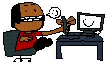

ABOUT: As a kid growing up in Brooklyn, Aleph Diallo always loved making stuff up. Not lies, but things of his own. Characters, stories, illustrations, fancomics, fake cartoons with a smorgasboard of copyrighted characters, and more of the typical little-kid faire. Once he discovered the internet as a wee lad, he found out about Greeny Phatom, Neocities & Macromedia Flash and these things changed his life forever. It eventually led to him figuring out how to make websites, and thus the ultimate quest to make a website with consistent branding, get his crummy animal doodles to do something and make aesthetically cool posters had begun. He is currently studying graphic design in high school and aims to create packaging, brand identity and promotional artwork. A majority of this part of badbunsen is focused on that work.
